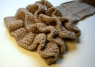
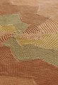
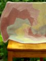

|
||
Premium Patterns Wintry Mix Mitts Love Bytes HawkeyeFree Patterns Kiddie Cadet Summerlin Ruffled Scarf Seamless DS Sock Simply Seamless Pouch Myriads of MushroomsExtras DIY Mitten Blocker Felt Patch Tutorial Yarn Dyeing Tutorial Needle Pouches Knitting Journal |
April 26, 2010 - Posted by Grace SchneblyA Knitter's RevolutionProject Specs When my niece was born, I had my heart set on knitting her a special baby blanket that could grow with her for the coming year. She's a Vegas baby and wouldn't really have a need for a wool blanket, so it gave me a chance to use some Malabrigo Organic Cotton I've had stashed away for way too long. I rarely use cotton yarns, especially after being spoiled by how soft Malabrigo Worsted is, but it was a welcome change and I loved every second of knitting this blanket. Picking a pattern was easy. I've always loved the Revolution blanket and have been looking for an opportunity to knit it for some time now. It is a great pattern with lots of diagrams, clear instructions, and plenty of examples to inspire you. Since you can knit as many rounds as you'd like, this pattern would work just as well for a full sized throw as it did for a baby blanket. Keep in mind though that each round takes twice as much time as the previous one, so even though a baby blanket really flies by, a larger blanket could be pretty time consuming. The construction is rather ingenious and simple, but you will find yourself with moderate amount of seaming at the end. I found this to be the hardest part of the whole blanket, so make sure you sit down in a quiet place with plenty of light and study how the other color sections join together. You will end up with one seam for each round, but once you figure one section out, the others are easy to duplicate. To finish my blanket, I used an i-cord bind off in the same color as the last section knit. It is important to go up a few needle sizes to make sure that it is loose enough. I used the Knitty tutorial as a guide (scroll all the way to the bottom of the page). The colors I used don't really match my sister's nursery but I was thinking this would be a great blanket to keep in the car or with her stroller. Malabrigo Cotton seems like it will be kid friendly since it is rather soft (and softened more after a wash in Eucalan) plus I have read that others have had no problem machine washing and drying it. |
   Recent ReviewsRecent Posts
 Our Favorites
|
| © 2007 KathrynIvy.com | ||
{kind=link}
{kind=link}